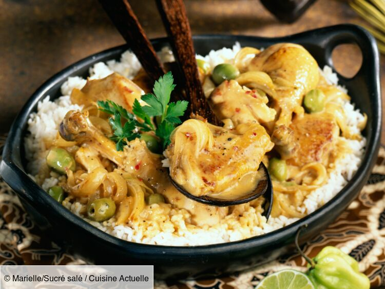

Yassa recipe

Description
Le yassa (d'un mot créole de Casamance signifiant (« frire ») est un plat sénégalais à base d'oignons
frits et de riz et qui peut être accompagné de marinée dans le citron puis frite ou braisée
(yassa à la viande,
yassa soguoma en bambara),
de poulet (yassa au poulet ou poulet yassa) ou de poisson (yassa au poisson).
C'est un plat simple, rapide à faire et souvent apprécié
de tous grâce à ses ingrédients de base simples et économiques.
Le yassa, d’abord d’origine diola,
a subsisté dans les pays de l’Afrique-Occidentale française,
notamment au Sénégal et au Mali.
Ingrédients
- 4 Cuisses de poulet
- des oignons, du riz, du citron (ou citron vert)
- de la moutarde, de piments, du bouillon de poulet, de l'ail, du sel et du poivre
Preparation
- Pressez les 4 citrons pour en recueillir
le jus puis épluchez et émincez deux oignons et écrasez la gousse d’ail. Découpez la volaille en morceaux.
- Disposez les morceaux de poulet dans un plat et recouvrez-les de la marinade.
Laissez-les mariner au réfrigérateur pendant 6 à 12 h (idéalement une nuit entière)
- Epluchez et émincez les 3 oignons restants.
Émincez et épépinez le piment. Dans une marmite,
mettez le reste de l’huile et faites revenir le reste des oignons.